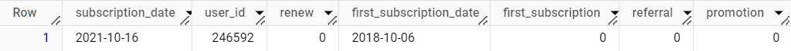
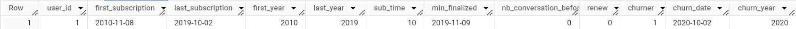
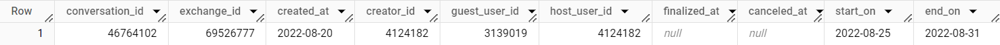
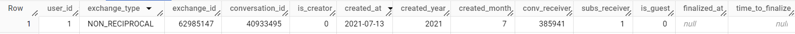
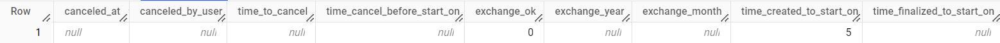

Holiday House Exchanges
Technical Part
Table Exchange
- conversation_id : Id de la conversation
- exchange_id : Id de l'échange de maison
- created_at : Date de création de la conversation
- creator_id : Id de l'utilisateur qui a initié la conversation
- guest_user_id : Id de l'utilisateur qui souhaite voyager
- host_user_id : Id de l'utilisateur qui reçoit
- finalized_at : Date de finalisation de l'échange. Un accord a été trouvé
- canceled_at : Date d'annulation de l'échange
- start_on : Date demandée de début de l'échange
- end_on : Date demandée de fin de l'échange
- guest_count : Nombre de voyageurs
- night_count : Nombre de nuits
- user_cancellation_id : Id de l'utilisateur qui a annulé l'échange
- exchange_type : Type d'échange - réciproque ou non réciproque
- home_type : Type de logement - maison ou appartement
- residence_type : Type de résidence - primaire ou secondaire
- capacity : Capacité d'accueil du logement
- country : Pays de l'hôte
- region : Région de l'hôte
- department : Département de l'hôte
- city : Ville de l'hôte
Table Subscription
- subscription_date : Date de l'abonnement
- user_id : Id de l'utilisateur
- renew : Si l'utilisateur s'est réabonné l'année suivante
- first_subscription_date : Date du premier abonnement de l'utilisateur
- first_subscription : Si la subscription_date est également la first_subscription_date
- referral : Si l'utilisateur est parrainé
- promotion : Si l'utilisateur a bénéficié d'une promotion sur son abonnement
- payment3x : Si l'utilisateur a payé en 3 fois
- payment2 : Si l'utilisateur a réalisé son 2ème paiement
- payment3 : Si l'utilisateur a réalisé son 3ème paiement
- country : Pays de l'utilisateur
- region : Région de l'utilisateur
- department : Département de l'utilisateur
- city : Ville de l'utilisateur
Analyse de la table Subscription
Objectif final : obtenir une ligne unique par utilisateur avec les informations de churn de chacun
Avant
Après
Requêtes utilisées
Certaines dates d’abonnement apparaissent pour la même année à quelques jours d’intervalles. Afin de supprimer ces doubles abonnements, nous utilisons cette requête.
WITH tmp AS(
SELECT DISTINCT *,
EXTRACT(YEAR FROM subscription_date) AS year
FROM `holiday.subscription`),
unique_per_year AS (
SELECT *,
ROW_NUMBER() OVER (PARTITION BY user_id, year ORDER BY subscription_date) AS row_num
FROM tmp
)
SELECT
subscription_date,
year AS year_subscription,
user_id,
renew,
first_subscription_date,
first_subscription,
referral,
promotion,
payment3x,
payment2,
payment3,
country AS user_country,
region AS user_region,
department AS user_department,
city AS user_city,
FROM unique_per_year
WHERE row_num = 1
ORDER BY user_id, subscription_date
Pour simplifier la table Subscription, et obtenir des informations utiles sur celle-ci, on vient agréger les informations par utilisateur unique. Ainsi, un utilisateur se verra attribuer une date de première et de dernière souscription, desquelles on vient extraire l'année pour ensuite les soustraire et obtenir la durée d'abonnement de chaque utilisateur. Sont également requêtés et inclus dans la nouvelle table le fait qu'un utilisateur ait churné, la date de churn potentielle, la première date de finalisation d'un échange ainsi que le nombre de conversations engagées avant la première finalisation.
WITH
lastsub AS(
--La fonction ARRAY_AGG permet de garder les informations de renew et de promotion sur la ligne concernée par la fonction MAX(subscription_date)--
SELECT
user_id,
MAX(subscription_date) AS last_subscription,
ARRAY_AGG(renew ORDER BY subscription_date DESC LIMIT 1)[ORDINAL(1)] as renew,
ARRAY_AGG(promotion ORDER BY subscription_date DESC LIMIT 1)[ORDINAL(1)] as promotion
FROM
`holiday.sub_unique_year`
GROUP BY
user_id
ORDER BY user_id
),
tmp AS (
SELECT
user_id,
first_subscription_date AS first_subscription,
ls.last_subscription,
ls.renew,
referral,
ls.promotion,
user_country,
user_region,
user_department,
user_city
FROM
`holiday.sub_unique_year`
LEFT JOIN lastsub ls
USING (user_id)
ORDER BY
user_id
),
tmp2 AS(SELECT
DISTINCT user_id,
first_subscription,
last_subscription,
EXTRACT(YEAR FROM first_subscription) AS first_year,
EXTRACT(YEAR FROM last_subscription) AS last_year,
EXTRACT(YEAR FROM last_subscription) - EXTRACT(YEAR FROM first_subscription) + 1 AS sub_time,
renew,
CASE
WHEN renew = 1 THEN 0
WHEN renew = 0 THEN 1
END AS churner,
CASE
WHEN renew = 0 THEN DATE_ADD(last_subscription, INTERVAL 1 YEAR)
ELSE NULL
END AS churn_date,
referral,
promotion,
user_country ,
CASE
WHEN user_region = 'Alsace' THEN 'Alsace'
WHEN user_region IN ('Aquitaine', 'Aquitaine Limousin Poitou-Charentes', 'Aquitaine-Limousin-Poitou-Charentes') THEN 'Aquitaine'
WHEN user_region = 'Auvergne' THEN 'Auvergne'
WHEN user_region IN ('Auvergne Rhône-Alpes', 'Auvernia-Ródano-Alpes') THEN 'Auvergne Rhône-Alpes'
WHEN user_region IN ('Basse-Normandie','Normandy') THEN 'Basse-Normandie'
WHEN user_region IN ('Bourgogne', 'Bourgogne-Franche-Comté', 'Bourgogne Franche-Comté', 'Bourgogne-Franche-Comte','Burgundy-Franche-Comte') THEN 'Bourgogne'
WHEN user_region IN ('Bretagne', 'Brittany') THEN 'Bretagne'
WHEN user_region = 'Centre' THEN 'Centre'
WHEN user_region = 'Champagne-Ardenne' THEN 'Champagne-Ardenne'
WHEN user_region = 'Corse' THEN 'Corse'
WHEN user_region = 'Franche-Comté' THEN 'Franche-Comté'
WHEN user_region = 'Guadeloupe' THEN 'Guadeloupe'
WHEN user_region = 'Guyane' THEN 'Guyane'
WHEN user_region = 'Haute-Normandie' THEN 'Haute-Normandie'
WHEN user_region IN ('Île-De-France','Ile-of-France','Isla De Francia','Regione Parigina') THEN 'Île-de-France'
WHEN user_region = 'La Réunion' THEN 'La Réunion'
WHEN user_region IN ('Languedoc-Roussillon', 'Languedoc-Roussillon Midi-Pyrénées') THEN 'Languedoc-Roussillon'
WHEN user_region = 'Limousin' THEN 'Limousin'
WHEN user_region = 'Lorraine' THEN 'Lorraine'
WHEN user_region = 'Martinique' THEN 'Martinique'
WHEN user_region = 'Mayotte' THEN 'Mayotte'
WHEN user_region = 'Midi-Pyrénées' THEN 'Midi-Pyrénées'
WHEN user_region = 'Nord-Pas-De-Calais' THEN 'Nord-Pas-de-Calais'
WHEN user_region IN ('Nouvelle-Aquitaine', 'Nueva-Aquitania') THEN 'Nouvelle-Aquitaine'
WHEN user_region IN ('Pays De La Loire','Loire Region') THEN 'Pays de la Loire'
WHEN user_region = 'Picardie' THEN 'Picardie'
WHEN user_region = 'Poitou-Charentes' THEN 'Poitou-Charentes'
WHEN user_region IN ("Provence-Alpes-Côte D'Azur", 'Provenza-Alpes-Costa Azul') THEN "Provence-Alpes-Côte d'Azur"
WHEN user_region = 'Rhône-Alpes' THEN 'Rhône-Alpes'
WHEN user_region IN ('British Columbia', 'Colombie-Britannique') THEN 'British Columbia'
WHEN user_region = 'Québec' THEN 'Quebec'
WHEN user_region = 'Ontario' THEN 'Ontario'
WHEN user_region = 'Alberta' THEN 'Alberta'
WHEN user_region = 'Manitoba' THEN 'Manitoba'
WHEN user_region IN ('New Brunswick', 'Nouveau-Brunswick') THEN 'New Brunswick'
WHEN user_region IN ('Prince Edward Island', 'Île-Du-Prince-Édouard') THEN 'Prince Edward Island'
WHEN user_region In('Newfoundland And Labrador', 'Terre-Neuve-Et-Labrador') THEN 'Newfoundland And Labrador'
WHEN user_region IN ('Nova Scotia', 'Nouvelle-Écosse') THEN 'Nova Scotia'
WHEN user_region IN ('Yukon Territory', 'Territoire Du Yukon', 'Yukon') THEN 'Yukon'
WHEN user_region = 'Saskatchewan' THEN 'Saskatchewan'
WHEN user_region IN ('Northwest Territories','Territoires Du Nord-Ouest') THEN 'Northwest Territories'
WHEN user_region = 'Michigan' THEN 'Michigan'
WHEN user_region IN ('État De Washington', 'Washington') THEN 'Washington'
WHEN user_region = 'Texas' THEN 'Texas'
WHEN user_region = 'New York' THEN 'New York'
WHEN user_region IN ('California', 'Californie') THEN 'California'
WHEN user_region IN ('District De Columbia', 'District Of Columbia') THEN 'District of Columbia'
WHEN user_region = 'Tennessee' THEN 'Tennessee'
WHEN user_region = 'État De New York' THEN 'New York'
WHEN user_region IN ('Floride', 'Florida') THEN 'Florida'
WHEN user_region = 'Massachusetts' THEN 'Massachusetts'
WHEN user_region = 'Arizona' THEN 'Arizona'
WHEN user_region IN ('Géorgie', 'Georgia') THEN 'Georgia'
WHEN user_region = 'Illinois' THEN 'Illinois'
WHEN user_region = 'Colorado' THEN 'Colorado'
WHEN user_region = 'Hawaii' THEN 'Hawaii'
WHEN user_region = 'Montana' THEN 'Montana'
WHEN user_region IN ('Louisiane', 'Louisiana') THEN 'Louisiana'
WHEN user_region = 'Maryland' THEN 'Maryland'
WHEN user_region IN ('Virginie', 'Virginia') THEN 'Virginia'
WHEN user_region = 'Idaho' THEN 'Idaho'
WHEN user_region IN ('Caroline-du-Nord', 'Caroline Du Nord', 'North Carolina') THEN 'North Carolina'
WHEN user_region IN ('Nouveau-Mexique', 'New Mexico') THEN 'New Mexico'
WHEN user_region IN ('Ohio', 'Ohio') THEN 'Ohio'
WHEN user_region IN ('Caroline Du Nord', 'North Carolina') THEN 'North Carolina'
WHEN user_region = 'South Carolina' THEN 'South Carolina'
WHEN user_region = 'Alabama' THEN 'Alabama'
WHEN user_region = 'Alaska' THEN 'Alaska'
WHEN user_region = 'New Jersey' THEN 'New Jersey'
WHEN user_region = 'Minnesota' THEN 'Minnesota'
WHEN user_region = 'New Hampshire' THEN 'New Hampshire'
WHEN user_region = 'Delaware' THEN 'Delaware'
WHEN user_region = 'Wyoming' THEN 'Wyoming'
WHEN user_region = 'Missouri' THEN 'Missouri'
WHEN user_region = 'Oregon' THEN 'Oregon'
WHEN user_region = 'Pennsylvania' THEN 'Pennsylvania'
WHEN user_region = 'Nevada' THEN 'Nevada'
WHEN user_region = 'Kansas' THEN 'Kansas'
WHEN user_region = 'Maine' THEN 'Maine'
WHEN user_region = 'Utah' THEN 'Utah'
WHEN user_region = 'Wisconsin' THEN 'Wisconsin'
WHEN user_region = 'Maryland' THEN 'Maryland'
WHEN user_region = 'Maryland' THEN 'Maryland'
ELSE user_region
END AS user_region,
user_department,
user_city
FROM
tmp
ORDER BY user_id
),
min_finalized_table AS (
SELECT user_id us_id, MIN(finalized_at) AS min_finalized FROM `holiday.user_index_exchange_table` exc
GROUP BY us_id
)
SELECT
tmp2.user_id,
first_subscription,
last_subscription,
first_year,
last_year,
sub_time,
mf.min_finalized,
COUNT(CASE WHEN first_subscription > '2019-01-01' AND min_finalized IS NOT NULL AND exc.created_at < min_finalized THEN 1
END) AS nb_conversation_before_first_finalized,
renew,
churner,
churn_date,
EXTRACT(YEAR FROM churn_date) AS churn_year,
referral,
promotion,
user_country,
user_region,
user_department,
user_city
FROM tmp2
LEFT JOIN min_finalized_table mf ON tmp2.user_id = mf.us_id
LEFT JOIN `holiday.user_index_exchange_table` exc
USING (user_id)
GROUP BY user_id, first_subscription,last_subscription,
first_year,
last_year,
sub_time,
mf.min_finalized,
renew,
churner,
churn_date,
referral,
promotion,
user_country,
user_region,
user_department,
user_city
ORDER BY user_id
Analyse de la table Exchange
Objectif final : obtenir les informations par user_id et non par conversation_id afin de pouvoir analyser les comportements de chaque utilisateur.
Avant
Après
 Requêtes utilisées
Nombre d'utilisateurs uniques : 190 864
SELECT
COUNT(DISTINCT creator_id) conversation_creators
FROM `portfolio-398208.holiday.exchange`
Dates minimales et maximales
SELECT
MIN(CASE WHEN created_at IS NOT NULL THEN created_at ELSE NULL END) AS created_min,
MAX(CASE WHEN created_at IS NOT NULL THEN created_at ELSE NULL END) AS created_max,
MIN(CASE WHEN finalized_at IS NOT NULL THEN finalized_at ELSE NULL END) AS finalized_min,
MAX(CASE WHEN finalized_at IS NOT NULL THEN finalized_at ELSE NULL END) AS finalized_max,
MIN(CASE WHEN start_on IS NOT NULL THEN start_on ELSE NULL END) AS start_min,
MAX(CASE WHEN start_on IS NOT NULL THEN start_on ELSE NULL END) AS start_max,
MIN(CASE WHEN end_on IS NOT NULL THEN end_on ELSE NULL END) AS end_min,
MAX(CASE WHEN end_on IS NOT NULL THEN end_on ELSE NULL END) AS end_max
FROM
`portfolio-398208.holiday.exchange`
44 lignes avec un début de séjour avant le 01/01/2019
SELECT
*
FROM
`portfolio-398208.holiday.exchange`
WHERE
start_on IS NOT NULL
AND start_on < '2019-01-01'
ORDER BY start_on DESC
LIMIT 1000
779860 lignes avec un début de séjour après le 25/11/2022
SELECT
*
FROM
`portfolio-398208.holiday.exchange`
WHERE
start_on IS NOT NULL
AND start_on > '2022-11-25'
ORDER BY start_on DESC
Calculer les nombres de conversations initiés par jour par utilisateur pour détecter les tests et robots et sélectionner un seuil pour ne garder que les vraies conversations
WITH tmp AS (
SELECT
created_at,
guest_user_id,
COUNT(*) nb
FROM
`portfolio-398208.holiday.exchange`
GROUP BY
created_at,
guest_user_id
ORDER BY
nb DESC
),
tmp2 AS(
SELECT
guest_user_id,
MAX(nb) maxnb
FROM tmp
GROUP BY guest_user_id
)
SELECT
PERCENTILE_CONT(maxnb,0) OVER() AS min,
PERCENTILE_CONT(maxnb,0.25) OVER() AS percentile25,
PERCENTILE_CONT(maxnb,0.5) OVER() AS median,
PERCENTILE_CONT(maxnb,0.75) OVER() AS percentile75,
PERCENTILE_CONT(maxnb,0.9) OVER() AS percentile90,
PERCENTILE_CONT(maxnb,0.95) OVER() AS percentile95,
PERCENTILE_CONT(maxnb,0.99) OVER() AS percentile99,
PERCENTILE_CONT(maxnb,1) OVER() AS max
FROM
tmp2
LIMIT 1
Un seuil à 36 conversations max en une journée par utilisateur nous permet de garder 95% des utilisateurs.
Une conversation_id pour un échange réciproque mène à 2 exchange_id unique qui correspondent à l’échange de chaque maison avec un guest_user_id et un host_user_id inversés. Le creator_id lui, reste le même pour les deux lignes.
190864 creators unique entre le 01/01/2019 et le 25/11/2022
SELECT
*
FROM
`portfolio-398208.holiday.exchange`
WHERE
start_on IS NOT NULL
AND start_on > '2022-11-25'
ORDER BY start_on DESC
Un utilisateur ne peut théoriquement finaliser un échange que si et seulement si il a souscrit à l'abonnement annuel. Or de nombreux utilisateurs de la table Exchange qui ont finalisé une conversation ne se retrouve pas dans la table Subscription. Cependant un utilisateur peut tout à fait converser avec d'autres utilisateurs sans pour autant prendre d'abonnement. Afin de supprimer les utilisateurs qui ont finalisé sans qu'on ne les retrouve dans la table Subscription, nous utilisons cette requête.
WITH
subs AS (
SELECT
DISTINCT user_id sub_id
FROM
`portfolio-398208.holiday.subscription`
),
creators AS (
SELECT
DISTINCT creator_id creator_id,
COUNT(finalized_at) nb_fin
FROM
`portfolio-398208.holiday.exchange`
GROUP BY creator_id
)
SELECT
creator_id,
nb_fin
FROM creators
LEFT JOIN subs ON creator_id = sub_id
WHERE sub_id IS NULL
AND nb_fin > 0
ORDER BY 1
La table Exchange nettoyée
WITH
date_clean AS (
SELECT
conversation_id,
exchange_id,
created_at,
creator_id,
guest_user_id,
host_user_id,
--On met sous le format DATE--
CAST(finalized_at AS DATE) AS finalized_at,
CAST(canceled_at AS DATE) AS canceled_at,
start_on,
end_on,
guest_countguest_count as guest_count,
night_count,
user_cancellation_id,
exchange_type,
home_type,
residence_type,
capacity,
country,
region,
department,
city
FROM `holiday.exchange`
--On ne sélectionne que les échanges plausibles--
WHERE (end_on BETWEEN '2019-01-01' AND '2023-12-31')
),
--Pour retrouver les creator_id qui ont écrit plus de 36 messages en une journée--
conv_count_36 AS (
SELECT creator_id, created_at, COUNT(DISTINCT conversation_id) AS conversation
FROM date_clean
GROUP BY creator_id, created_at
HAVING COUNT(DISTINCT conversation_id) > 36
),
--Pour retrouver les conversations qui ont été annulées sans qu'elles ne soient finalisées--
cancel_without_fin AS(
SELECT conversation_id FROM date_clean
WHERE (canceled_at IS NOT NULL AND finalized_at IS NULL) GROUP BY conversation_id
),
--On va chercher les utilisateurs qui nous sont remontés avec la requête précédente pour ne garder ceux qui ont finalisé que si et seulement si on les retrouve dans la table Subscription.--
fin_not_in_subs AS(
SELECT creator_id
FROM `holiday.users_to_delete`
)
SELECT *
FROM date_clean
WHERE
creator_id NOT IN (
SELECT creator_id
FROM conv_count_36)
--Ces exchange_id ont le même guest_user_id et host_user_id--
AND exchange_id NOT IN (59166404,62655548,63165654,69284847)
AND conversation_id NOT IN (
SELECT conversation_id
FROM cancel_without_fin)
AND host_user_id NOT IN(
SELECT creator_id
FROM fin_not_in_subs
)
AND guest_user_id NOT IN(
SELECT creator_id
FROM fin_not_in_subs
)
Une fois la table Exchange nettoyée, le but est maintenant de créer une table davantage exploitable pour bien analyser les actions de chaque utilisateur. Ainsi, chaque user_id se verra attribuer un conversation_receiver et le rôle de chacun sera défini par du booléen dans les colonnes d'attribut "is_creator","is_guest","is_host","canceled_by_user" et "subs-receiver" si l'on retrouve l'interlocuteur dans la table Subscription. Enfin, les noms des régions des 5 pays les plus visités seront homogénéisés afin de pouvoir détailler les échanges par région correctement.
WITH
guest AS (
SELECT
*,
guest_user_id AS user_id,
host_user_id AS conv_receiver
FROM `holiday.clean_exchange_table`
),
host AS (
SELECT
*,
host_user_id AS user_id,
guest_user_id AS conv_receiver
FROM `holiday.clean_exchange_table`
WHERE exchange_type = 'NON_RECIPROCAL'
),
union_user AS (
SELECT *
FROM guest
UNION ALL
SELECT *
FROM host
)
SELECT
user_id,
exchange_type,
exchange_id,
conversation_id,
CASE
WHEN creator_id = user_id THEN 1 ELSE 0
END AS is_creator,
created_at,
EXTRACT(YEAR FROM created_at) AS created_year,
EXTRACT(MONTH FROM created_at) AS created_month,
conv_receiver,
CASE
WHEN conv_receiver IN (SELECT user_id FROM `holiday.user_sub_overview_table`) THEN 1
ELSE 0
END AS subs_receiver,
CASE
WHEN guest_user_id = user_id THEN 1 ELSE 0
END AS is_guest,
finalized_at,
CASE
WHEN finalized_at IS NOT NULL
THEN EXTRACT(DAY FROM finalized_at - created_at)
ELSE NULL
END AS time_to_finalize,
canceled_at,
CASE
WHEN
user_cancellation_id IS NOT NULL
AND user_cancellation_id = user_id
THEN 1
WHEN
user_cancellation_id IS NOT NULL
AND user_cancellation_id != user_id
THEN 0
ELSE NULL
END AS canceled_by_user,
CASE
WHEN canceled_at IS NOT NULL
THEN EXTRACT(DAY FROM canceled_at - finalized_at)
ELSE NULL
END AS time_to_cancel,
CASE
WHEN canceled_at IS NOT NULL AND start_on IS NOT NULL
THEN EXTRACT(DAY FROM start_on - canceled_at)
ELSE NULL
END AS time_cancel_before_start_on,
IF(finalized_at IS NOT NULL AND canceled_at IS NULL,1,0) AS exchange_ok,
IF(finalized_at IS NOT NULL AND canceled_at IS NULL,EXTRACT(YEAR FROM start_on),NULL) AS exchange_year,
IF(finalized_at IS NOT NULL AND canceled_at IS NULL,EXTRACT(MONTH FROM start_on),NULL) AS exchange_month,
CASE
WHEN start_on IS NOT NULL
THEN EXTRACT(DAY FROM start_on - created_at)
ELSE NULL
END AS time_created_to_start_on,
CASE
WHEN start_on IS NOT NULL AND finalized_at IS NOT NULL
THEN EXTRACT(DAY FROM start_on - finalized_at)
ELSE NULL
END AS time_finalized_to_start_on,
start_on,
end_on,
guest_count,
night_count,
home_type,
residence_type,
capacity,
country,
CASE
WHEN region = 'Alsace' THEN 'Alsace'
WHEN region IN ('Aquitaine', 'Aquitaine Limousin Poitou-Charentes', 'Aquitaine-Limousin-Poitou-Charentes') THEN 'Aquitaine'
WHEN region = 'Auvergne' THEN 'Auvergne'
WHEN region IN ('Auvergne Rhône-Alpes', 'Auvernia-Ródano-Alpes') THEN 'Auvergne Rhône-Alpes'
WHEN region IN ('Basse-Normandie','Normandy') THEN 'Basse-Normandie'
WHEN region IN ('Bourgogne', 'Bourgogne-Franche-Comté', 'Bourgogne Franche-Comté', 'Bourgogne-Franche-Comte','Burgundy-Franche-Comte') THEN 'Bourgogne'
WHEN region IN ('Bretagne', 'Brittany') THEN 'Bretagne'
WHEN region = 'Centre' THEN 'Centre'
WHEN region = 'Champagne-Ardenne' THEN 'Champagne-Ardenne'
WHEN region = 'Corse' THEN 'Corse'
WHEN region = 'Franche-Comté' THEN 'Franche-Comté'
WHEN region = 'Guadeloupe' THEN 'Guadeloupe'
WHEN region = 'Guyane' THEN 'Guyane'
WHEN region = 'Haute-Normandie' THEN 'Haute-Normandie'
WHEN region IN ('Île-De-France','Ile-of-France','Isla De Francia','Regione Parigina') THEN 'Île-de-France'
WHEN region = 'La Réunion' THEN 'La Réunion'
WHEN region IN ('Languedoc-Roussillon', 'Languedoc-Roussillon Midi-Pyrénées') THEN 'Languedoc-Roussillon'
WHEN region = 'Limousin' THEN 'Limousin'
WHEN region = 'Lorraine' THEN 'Lorraine'
WHEN region = 'Martinique' THEN 'Martinique'
WHEN region = 'Mayotte' THEN 'Mayotte'
WHEN region = 'Midi-Pyrénées' THEN 'Midi-Pyrénées'
WHEN region = 'Nord-Pas-De-Calais' THEN 'Nord-Pas-de-Calais'
WHEN region IN ('Nouvelle-Aquitaine', 'Nueva-Aquitania') THEN 'Nouvelle-Aquitaine'
WHEN region IN ('Pays De La Loire','Loire Region') THEN 'Pays de la Loire'
WHEN region = 'Picardie' THEN 'Picardie'
WHEN region = 'Poitou-Charentes' THEN 'Poitou-Charentes'
WHEN region IN ("Provence-Alpes-Côte D'Azur", 'Provenza-Alpes-Costa Azul') THEN "Provence-Alpes-Côte d'Azur"
WHEN region = 'Rhône-Alpes' THEN 'Rhône-Alpes'
WHEN region IN ('British Columbia', 'Colombie-Britannique') THEN 'British Columbia'
WHEN region = 'Québec' THEN 'Quebec'
WHEN region = 'Ontario' THEN 'Ontario'
WHEN region = 'Alberta' THEN 'Alberta'
WHEN region = 'Manitoba' THEN 'Manitoba'
WHEN region IN ('New Brunswick', 'Nouveau-Brunswick') THEN 'New Brunswick'
WHEN region IN ('Prince Edward Island', 'Île-Du-Prince-Édouard') THEN 'Prince Edward Island'
WHEN region In('Newfoundland And Labrador', 'Terre-Neuve-Et-Labrador') THEN 'Newfoundland And Labrador'
WHEN region IN ('Nova Scotia', 'Nouvelle-Écosse') THEN 'Nova Scotia'
WHEN region IN ('Yukon Territory', 'Territoire Du Yukon', 'Yukon') THEN 'Yukon'
WHEN region = 'Saskatchewan' THEN 'Saskatchewan'
WHEN region IN ('Northwest Territories','Territoires Du Nord-Ouest') THEN 'Northwest Territories'
WHEN region = 'Michigan' THEN 'Michigan'
WHEN region IN ('État De Washington', 'Washington') THEN 'Washington'
WHEN region = 'Texas' THEN 'Texas'
WHEN region = 'New York' THEN 'New York'
WHEN region IN ('California', 'Californie') THEN 'California'
WHEN region IN ('District De Columbia', 'District Of Columbia') THEN 'District of Columbia'
WHEN region = 'Tennessee' THEN 'Tennessee'
WHEN region = 'État De New York' THEN 'New York'
WHEN region IN ('Floride', 'Florida') THEN 'Florida'
WHEN region = 'Massachusetts' THEN 'Massachusetts'
WHEN region = 'Arizona' THEN 'Arizona'
WHEN region IN ('Géorgie', 'Georgia') THEN 'Georgia'
WHEN region = 'Illinois' THEN 'Illinois'
WHEN region = 'Colorado' THEN 'Colorado'
WHEN region = 'Hawaii' THEN 'Hawaii'
WHEN region = 'Montana' THEN 'Montana'
WHEN region IN ('Louisiane', 'Louisiana') THEN 'Louisiana'
WHEN region = 'Maryland' THEN 'Maryland'
WHEN region IN ('Virginie', 'Virginia') THEN 'Virginia'
WHEN region = 'Idaho' THEN 'Idaho'
WHEN region IN ('Caroline-du-Nord', 'Caroline Du Nord', 'North Carolina') THEN 'North Carolina'
WHEN region IN ('Nouveau-Mexique', 'New Mexico') THEN 'New Mexico'
WHEN region IN ('Ohio', 'Ohio') THEN 'Ohio'
WHEN region IN ('Caroline Du Nord', 'North Carolina') THEN 'North Carolina'
WHEN region = 'South Carolina' THEN 'South Carolina'
WHEN region = 'Alabama' THEN 'Alabama'
WHEN region = 'Alaska' THEN 'Alaska'
WHEN region = 'New Jersey' THEN 'New Jersey'
WHEN region = 'Minnesota' THEN 'Minnesota'
WHEN region = 'New Hampshire' THEN 'New Hampshire'
WHEN region = 'Delaware' THEN 'Delaware'
WHEN region = 'Wyoming' THEN 'Wyoming'
WHEN region = 'Missouri' THEN 'Missouri'
WHEN region = 'Oregon' THEN 'Oregon'
WHEN region = 'Pennsylvania' THEN 'Pennsylvania'
WHEN region = 'Nevada' THEN 'Nevada'
WHEN region = 'Kansas' THEN 'Kansas'
WHEN region = 'Maine' THEN 'Maine'
WHEN region = 'Utah' THEN 'Utah'
WHEN region = 'Wisconsin' THEN 'Wisconsin'
WHEN region = 'Maryland' THEN 'Maryland'
WHEN region IN ('Illes Balears', 'Îles Baléares', 'Balearic Islands', 'Islas Baleares') THEN 'Illes Balears'
WHEN region IN ('Comunidad De Madrid', 'Communauté De Madrid', 'Comunitat Valenciana') THEN 'Comunidad De Madrid'
WHEN region IN ('Catalogne', 'Catalonia', 'Catalunya', 'Cataluña', 'Cataluña, Catalonia') THEN 'Catalunya'
WHEN region IN ('Andalucía', 'Andalousie', 'Andalusia') THEN 'Andalucía'
WHEN region IN ('Comunidad Valenciana', 'Valence', 'Valencian Community') THEN 'Comunidad Valenciana'
WHEN region IN ('Castilla Y León', 'Castille-Et-León', 'Castille-León', 'Castilla-León', 'Castille Et León', 'Castille-Leon', 'Castille Leon') THEN 'Castilla y León'
WHEN region IN ('Murcie', 'Région De Murcia', 'Región De Murcia') THEN 'Región De Murcia'
WHEN region IN ('Cantabrique', 'Cantabrie') THEN 'Cantabrique'
WHEN region IN ('Galice', 'Galicia') THEN 'Galicia'
WHEN region IN ('Islas Canarias', 'Canaries', 'Canary Islands') THEN 'Islas Canarias'
WHEN region IN ('Navarre', 'Navarra', 'Comunidad Foral de Navarra', 'Comunitat Foral de Navarra') THEN 'Navarra'
WHEN region IN ('Pays Basque', 'Euskadi', 'País Vasco') THEN 'País Vasco'
WHEN region IN ('Aragon') THEN 'Aragon'
WHEN region IN ('Extremadura', 'Estrémadure') THEN 'Extremadura'
WHEN region IN ('La Rioja') THEN 'La Rioja'
WHEN region IN ('Asturies', 'Les Asturies', 'Principado De Asturias') THEN 'Principado De Asturias'
WHEN region IN ('Veneto', 'Vénétie') THEN 'Veneto'
WHEN region IN ('Lazio', 'Latium') THEN 'Lazio'
WHEN region = 'Umbria' THEN 'Umbria'
WHEN region IN ('Sardegna', 'Sardaigne') THEN 'Sardaigne'
WHEN region IN ('Lombardia', 'Lombardie') THEN 'Lombardie'
WHEN region IN ('Toscana', 'Toscane', 'Tuscany') THEN 'Toscana'
WHEN region IN ('Sicilia', 'Sicile', 'Sicily') THEN 'Sicilia'
WHEN region = 'Puglia' THEN 'Puglia'
WHEN region IN ('Emilia-Romagna', 'Emilia Romagna') THEN 'Emilia-Romagna'
WHEN region = 'Marches' THEN 'Marches'
WHEN region = 'Valle D\'aosta' THEN 'Valle D\'aosta'
WHEN region IN ('Pouilles', 'Pouille') THEN 'Pouilles'
WHEN region IN ('Ligurie', 'Liguria') THEN 'Ligurie'
WHEN region IN ('Piemonte', 'Piémont', 'Piedmont') THEN 'Piemonte'
WHEN region IN ('Abruzzo', 'Abruzzes') THEN 'Abruzzo'
WHEN region = 'Ombrie' THEN 'Ombrie'
WHEN region IN ('Friuli-Venezia Giulia', 'Frioul-Vénétie Julienne') THEN 'Frioul-Vénétie Julienne'
WHEN region = 'Basilicata' THEN 'Basilicata'
WHEN region = 'Calabria' THEN 'Calabria'
WHEN region IN ('Trentino-Alto Adige', 'Trentin-Haut-Adige', 'Trentino-Südtirol') THEN 'Trentino-Alto Adige'
ELSE region
END AS region,
department,
city
FROM union_user
ORDER BY user_id
.